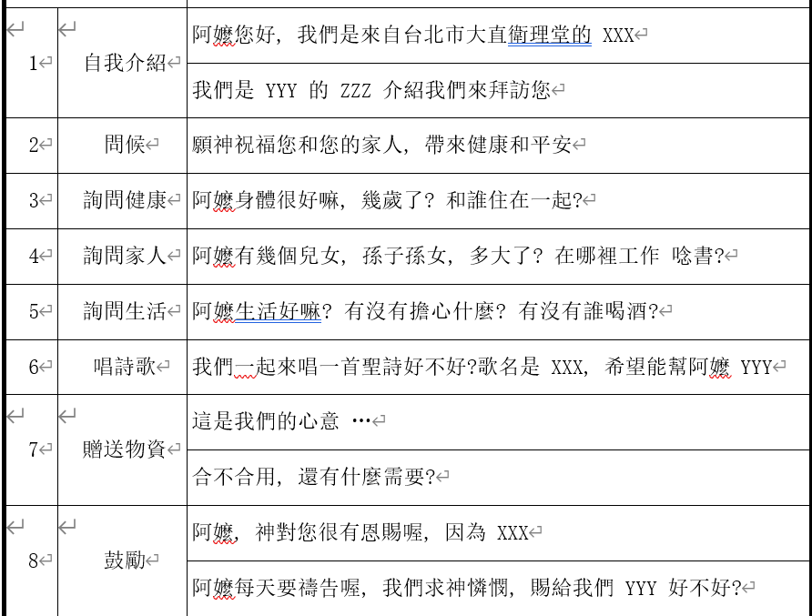

壹、營會宗旨
- 體驗台灣不同族群、文化之優美及特色。
- 學習團隊工作的彼此配搭及團體生活彼此配合。
- 學習基督耶穌「施比受更為有福」的精神，將我們所有、所學的貢獻出來。
- 了解城鄉差距，適應不同的生活。
- 增進體能、技藝。
- 主辦單位：中華基督教衛理公會大直衛理堂
- 協辦單位：新南國小
- 活動地點：新南國小
- 校長：陳和貴
- 地址：906002屏東縣高樹鄉新南村7鄰興店路5號
- 電話：08-7962782
貳、營隊公約
- 準時出席，不遲到不早退
- 我要依照營長幹部指示行動
- 我要用最開心的笑容與熱情的心陪伴彼此
- 我會關心隊友，有緊急狀況趕快告訴幹部
- 上課時間不使用手機 也不讓學生使用手機
- 我會專心聽隊友的分享，並且發揮團隊精神
- 我願意積極主動，參與體驗營的各個活動
- 我會小心保管活動中發給我的手冊和相關物品
參、各組工作分配
組別 負責同工 執掌 組員 領隊兼籌修組 施小惠 1. 為行程行動祈禱
2. 作為每個人心靈的輔導
3. 代表團隊與當地領袖聯絡
4. 晨更、晚禱及教育訓練張桐慶
王昱蓉總召 范辰威 1.掌握行程/課程時間
2.集合隊員
3.帶領事工預備
4.處理緊急事件
5.促進各組完成進度總務組 范辰威 1. 製作結業證書、準備禮物
2. 收、支（保險）、預算/決算
3. 住：住宿相關事宜/民宿
4. 行：交通/遊覽車費
5. 食：採買/烹煮食材餐點飲料活動組 王昱蓉 團體唱跳課程、下午活動設計 教學組 陳定宇 上午教學課程設計 才藝組 張桐慶 才藝課程設計 才藝時間分組 魔方 手做 魔術 音樂 學生分組 黃隊 葉俞妤、鐘佳妤、李品妍、林晏澤、林儀真、邱宇婕、曹媛婷、黃敏丞 隊輔:王昱蓉、胡少駿 紅隊 楊蕎語、王元皓、梁庭皓、張碩原、邱子薰、潘靖琳、鄭以婕、吳彥岑 隊輔:許亞撒、陳定宇 藍隊 梁筱翎、林汝玥、柯羽桓、楊詠宸、洪揚茗、洪芊昀、柯竣彬、柯思涵 隊輔:張桐慶、沈予希 綠隊 吳宇軒、鄭巧晨、柯文甯、蔡沐宏、鄭允齊、張雅靜、王宜靓、利昀蓉 隊輔:蔡穎君 >上午課程 低年級 王昱蓉、蔡穎君 中高年級 陳定宇、沈予希 下午課程 低年級 張桐慶 中高年級 施小惠 肆、教學方案


伍、探訪流程
陸、學生名單總攬與分組
.png)
柒、行前通知
- 請帶身分證與健保卡
- 請自備盥洗用具(牙刷、牙膏、毛巾)
- 請自備環保餐具(碗、筷子、湯匙、杯子)
- 請自備隨身藥品、防蚊液及防曬用品
- 請準備足夠現金
- 攜帶團服
- 攜帶雨具
- 攜帶薄外套與長褲
- 攜帶拖鞋及球鞋
- 請勿攜帶貴重物品
- 禁止飲酒
- 最後，請務必攜帶一顆火熱、願意奉獻的心一起到新南國小----YA!!
8/3 便服 8/4 團服 8/5 便服 8/6 便服 8/7 團服 8/8 便服